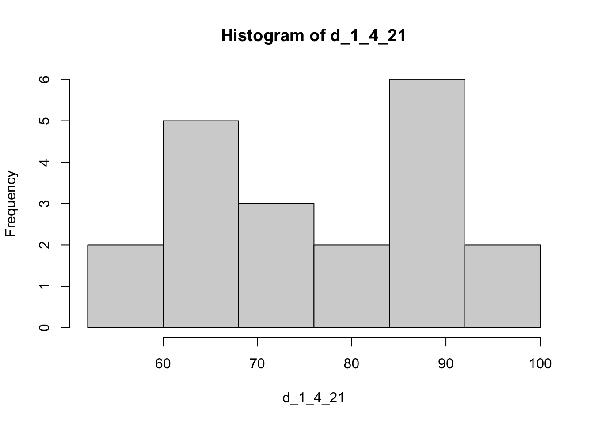
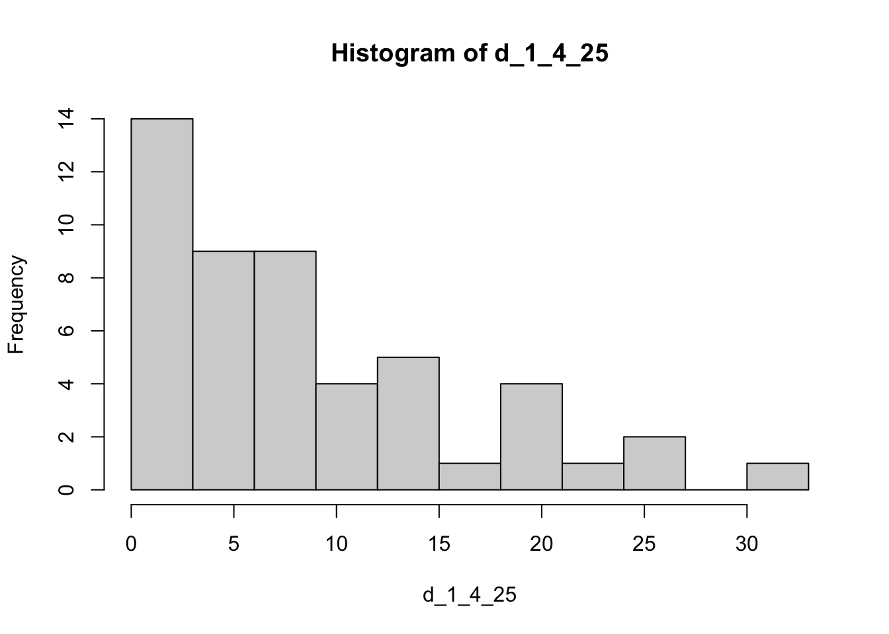
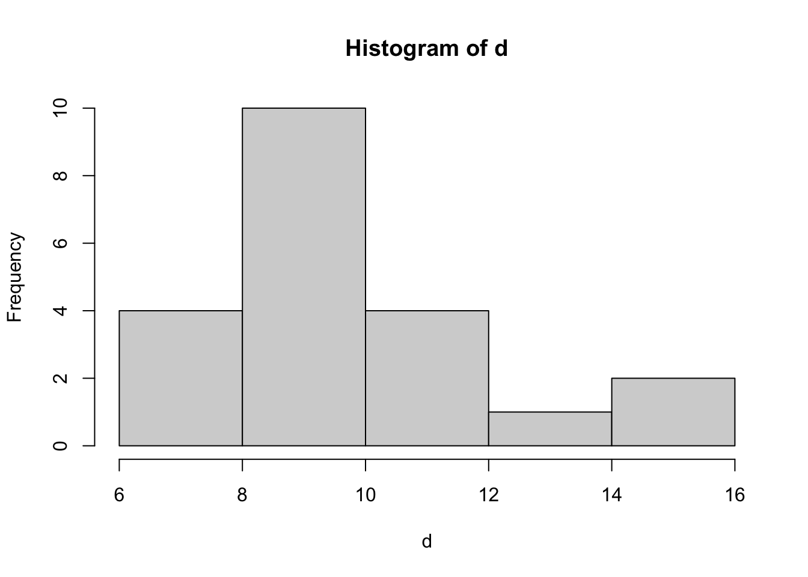
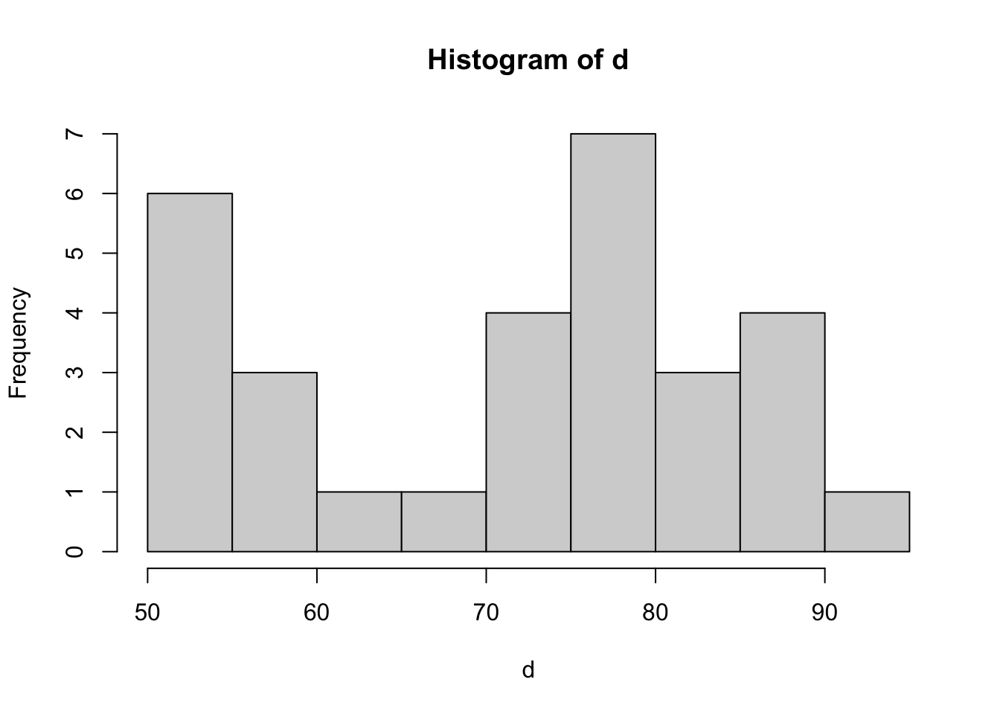

Midterm Review 01
Chapter 01
- 1.4.21, 1.4.22, 1.4.25
Section 1.4
Q21 -Q 22
- Has two peaks, one at about 65 and one at about 90
- A bimodal shape is not usual. This could be because of two different classes that are differently prepared for the test.
Q25
Min, max:
[1] 0.2[1] 32.3Range:
[1] 32.1Let’s use 11 classes of width 3

| interval_start | interval_end | count | frequency | |
|---|---|---|---|---|
| 1 | 0 | 3 | 14 | 0.0933 |
| 2 | 3 | 6 | 9 | 0.0600 |
| 3 | 6 | 9 | 9 | 0.0600 |
| 4 | 9 | 12 | 4 | 0.0267 |
| 5 | 12 | 15 | 5 | 0.0333 |
| 6 | 15 | 18 | 1 | 0.0067 |
| 7 | 18 | 21 | 4 | 0.0267 |
| 8 | 21 | 24 | 1 | 0.0067 |
| 9 | 24 | 27 | 2 | 0.0133 |
| 10 | 27 | 30 | 0 | 0.0000 |
| 11 | 30 | 33 | 1 | 0.0067 |
Chapter 02
- 2.1.4, 2.1.9, 2.1.21
- 2.2.10
- 2.3.1, 2.3.6-14, 2.3.27
Section 01
Q4
Mean:
[1] 3.285714Median:
[1] 3Mode:
[1] "3"Q9
Mean:
[1] 3.929167Median:
[1] 3.9Dataset looks fairly symmetric, mean and median are very close to each other.
Q21
Mean:
[1] 9.690476Median:
[1] 9.2Mode:
[1] "6.8" "8.2" "10" "10.4"Data may be a little right skewed since the mean is to the right of the median.
Histogram (or dot plot) supports this statement

Section 2.2
Q10
Range:
[1] 1.11Sample Variance:
[1] 0.19007Sample Standard Deviation:
[1] 0.4359702Mean:
[1] 1.712The various pieces of the sample variance formula:
| x | x - xbar | (x - xbar)^2 |
|---|---|---|
| 1.28 | -0.432 | 0.186624 |
| 2.39 | 0.678 | 0.459684 |
| 1.50 | -0.212 | 0.044944 |
| 1.88 | 0.168 | 0.028224 |
| 1.51 | -0.202 | 0.040804 |
Range/SD:
[1] 2.546046Range should be 4 x standard deviation, but it’s about 2.5. Not a perfect approximation but not too suprising since there are only 5 data apoints.
Section 2.3
Q1
Range:
[1] 5Range approx of Std. Dev
[1] 1.25Std. Dev:
[1] 1.75119Pretty good approximation!
Q6 - Q11
- k = 1, total = 68%
- k = 2, total = 95%
- between 30 and 50 = 95/2 = 47.5%, between 50 and 60 = 68/2 = 34%, total = 47.5 + 34 = 81.5%
- < 50 = 50%. 50 to 60 = 34% (see number 8), Greater than 60 = 100% - 34% - 50% = 16%.
- Less than 60: 100% - 16% = 84%
- 40 or more: 40 to 50 = 34%, greater than 50 = 50%, therefore 40 or more: 34 + 50 = 84%
Q12 - Q14
- k = 3, At least 0.8888889
- k = 2, At least 0.75
- k = 2.5, At least 0.84
Q27
Range:
[1] 42Range Approximatino of SD
[1] 10.5Actual SD:
[1] 13.10107Within 1 SD:
[1] 0.5333333Within 2 sds:
[1] 1Within 3 sds:
[1] 1The empirical rule isn’t very accurate here - most likely to do the fact that the data is not mound shaped at all:

Chapter 04
- 4.1.13-15
- 4.2.11-15, 4.2.38, 4.2.40,
- 4.3.20, 4.3.25
- 4.4.16-18, 4.4.30, 4.4.36
- 4.5.7, 4.5.15
Section 1
Q13-Q15
See notes from class PDF of Notes
Section 2
Q11-Q15
E1 = E2 = .15, E3 = .4
E4 = 2E5
E1 + E2 + E3 + 2E5 + E5 = 1
.15 + .15 + .4 + 3E5 = 1
E5 = .1
E4 = .2
.15 + .4 + .2 = .75
.15 + .4 = .55
P(E1, E2, E3, E4) = 0.9
1 - .75 = .25
Q38
1 * 1/4 * 1/4 = 1/16 = 4 * (1/4 * 1/4 * 1/4)
Q40
a. 114/220
b. 25/220
c. 156/220
Section 3
Q20
2 * 2 * 2 = 8
Q25
a. 6 * 6 = 36
b. 1/6 * 1/6 = 1/36
c. 5/6
Section 4
Q16-17
Q16: a. 0, b. .8
Q17: a. .12/.4 = .3, b. no, c. Yes, P(B|A) = P(B)
Q18
a. 1
b. 1
c. 2/6
d. 0
e. 2/6
f. 0
g. 0
h. 1
i. 5/6
Q30
A - miss by first inspector
B - miss by second inspector
given: P(A) = .1, P(B|A) = 5/10 = .5
Question is asking for A and B to be true
Use multiplication rule:
\(P(A \cap B) = P(A)P(B|A) = .1 * .5 = .05\)
Q36
a. .71
b. .29
c. .35/.55
d. .36/.45
e. .35/.71
f. .09/.29
Section 5
Q7
\[ \begin{aligned} P(A) &= P(A|B)P(A) + P(A|B^c)P(B^c) \\ &= .6 * .3 + .5 * .4 \\ &= 0.38 \end{aligned} \]
Q15
a.
\[ \begin{aligned} P(D) &= .1 \\ P(D^c) &= .9 \\ P(N|D^c) &= .85/.9 = .94\\ P(N|D) &= .02/.1 = .2 \end{aligned} \]
b.
\[ \begin{aligned} P(D|N) & = \frac{P(N|D) P(D)}{P(N)} \\ &= \frac{P(N|D) P(D)}{P(N|D) P(D) + P(N|D^c) P(D^c)} \\ & = \frac{.2 *.1 }{.2 *.1 + .94* .9} \\ & = 0.023 \end{aligned} \]
c.
Same as B but
\[ P(D|N) = P(D \cap N)/P(N) = .02 / .87 = .023 \]
d. \(P(P|D^c) = .05/.9 = 0.056\)
e. \(P(N|D) = .02/.1 = .2\)
f. The 20% false negative rate is a little high - it would miss 20% of disease.